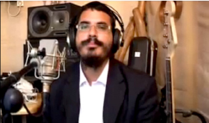

Bringing the Rebbe into Thousands of Homes
A lone avreich ’ s work has touched the hearts of Jews from all over Eretz Yisroel and the world, illuminating their homes with the light of Chassidus. Rabbi Sagi Weiss , who has managed to bring dozens of young people to the path of Chassidus, tells Beis Moshiach about the revolutionary audio disk project that he initiated, calling upon other Chabad Chassidim to join .
Translated by Michoel Leib Dobry

“We were living in Kiryat Malachi at the time. Despite the fact that it is a very Chassidic community, everything seemed so dry. I told my wife that we had to find a place of shlichus to fulfill the directives of the Rebbe, Melech HaMoshiach,” Rabbi Weiss recalled in an interview last month with Beis Moshiach.
“I told her that I wanted to go out on shlichus to a tourist city in Eretz HaKodesh, such as Teveria or Eilat.”
In a manner of “when they have not yet called, I will respond,” an incredible example of Divine Providence took place. The very next morning, his wife’s telephone rang. It was Rebbetzin Hecht from Eilat. “We are looking for a teacher, and I received some very good recommendations about you,” she said. The couple wrote to the Rebbe and requested his holy advice. The Rebbe gave a clear-cut answer that the time for action was at hand.
A few weeks later, during the month of Elul, they found themselves along the long and winding road to Israel’s southernmost city, located on the banks of the Red Sea. Within a short period of time, Rabbi Weiss had established a Chabad yeshiva together with Rabbi Erez Dovid Bendetowitz, designed for baalei t’shuva and those exploring their Jewish roots.
It didn’t take long before this brand-new shliach realized that he was very successful in all areas of spreading Yiddishkait. According to Rabbi Weiss, there were close to forty Jews who had chosen to forego their previous lifestyles and begin observing Torah and mitzvos. Fifteen of them began wearing kapotes.
As someone who had always lived, composed, and played music, Rabbi Weiss felt that the time had come to do shlichus via this medium as well. He decided to record and copy five of his songs and produce a CD. His compositions dealt primarily with the teachings of the Tanya. The Rebbe, Melech HaMoshiach, gave him a bracha via “Igros Kodesh,” but the passage from theory to actual deed had one small problem: money. “I needed twenty-five thousand shekels, but was unsuccessful in raising the money. A few months later, I found myself writing to the Rebbe again out of a sense of despair and dejection. I listed all my efforts in gathering the funds, noting that it seemed that I wouldn’t be able to execute the project.
“When I opened the volume of ‘Igros Kodesh’ where I had placed my letter, the Rebbe’s response was that he was providing a check for his participation in covering my expenses. I knew that the Rebbe wanted me to continue, and he had already forwarded me the money in his own way…”
Rabbi Weiss didn’t have long to wait. “The following morning, a friend of mine, a young avreich, not known as a person of considerable financial means, gave me eight thousand shekels in cash. He knew that I was trying to obtain contributions for my disk, but he was also the last person I thought could possibly give me the money I needed for this project. I was in shock. He explained that his daughter had been seriously ill, and he made a snap decision that this was an ‘auspicious time’ to give this amount.
“I immediately went to the studio and made a commitment to pay twenty thousand shekels. At the moment, I only had half the required amount: eight thousand from my friend and another two thousand that I had previously managed to collect from other sources. As we started to make the CD, more contributions began coming in.”
Everything seemed quite promising at this point, but when the Pesach holiday rolled around, Rabbi Weiss found himself in “one big mess,” as he put it. “The financial situation suddenly got worse, and I felt once again that my mission was in doubt. I wrote to the Rebbe that I had done my shlichus, but I had committed myself to an amount of money that I just couldn’t raise. As a result, I was asking for help that I shouldn’t get myself into a deeper hole. I should be able to get another five thousand shekels somehow, but for me to raise ten thousand shekels would be the financial equivalent of parting the Red Sea. The Rebbe continued to accompany me every step of the way, writing that ‘there is no reason to be daunted by the financial situation.’
“The next day, I came to the yeshiva to deliver a shiur. When the class was over, one of the students came up to me. He said that he had recently worked as a lifeguard, and he wanted an explanation of the concept of ‘maaser.’ I thought that this was nothing more than an academic inquiry. When I finished my explanation, he said that he wanted to give ‘maaser.’ Since I was certain that we were talking about no more than a few hundred shekels, I suggested that he should speak with the rosh yeshiva, Rabbi Bendetowitz. However, the determined young man asked me if there was something for which I needed money. I explained to him about my recording project and the recent financial complications, but I immediately noted that we were talking about a large sum of money.
“The young man then asked me for the name and phone number of the recording producer. As I looked on incredulously, he called and paid the entire balance for the recording project on his credit card.” To this day, Sagi becomes deeply moved when he recalls this miraculous event. “This was something truly amazing. The Rebbe proved to me again and again: ‘I am here, and I’ll be with you every step of the way.’”
•
Since the production of the first disk, he has produced an average of one disk every four months. The last one, created just a few weeks ago, was given the name Adam Chadash. “On this disk, I prepare the listeners for the holidays, explaining in modern terminology the whole concept of t’shuva and what it means to us in our daily lives – in terms relevant to our generation.” He has already produced about sixty songs so far.
Within a short period of time, he decided to realize his tremendous potential in music and Torah education. He would record a monthly disk on the holidays and other auspicious events of the given month, or the weekly Torah portions and their unique teachings in avodas Hashem, including songs that he personally composed and performed. Producing such a disk demanded a great deal of his time and energy: “Of course, everything is based upon the words of the Rebbe, Melech HaMoshiach, but there’s more to it than just that. There were times when I went through twenty to thirty sichos in search of the ‘nekuda.’ This wasn’t something that I just ‘pulled out of my hat’; every disk was the fruit of much labor.”
This unique monthly disk became a regular staple in the homes of thousands of people, most of whom were not yet Torah observant. “However, there are also Lubavitchers, particularly women and children, who love to listen to the Chassidic themes.” Each month, more and more people discover his audio productions, and the demand continues to grow.
•
Rabbi Sagi Weiss became a baal t’shuva when he was twelve years old. He recalls that he was in search of greater meaning in his life, something of a far more spiritual nature. To his tremendous good fortune, a Chabad family brought him closer to the teachings of Chassidus, and slowly but surely, he progressed along the path of Torah and mitzvos. “As someone who came from ‘the other side of the tracks,’ I know how much my audio disks are in need. The main problem is that it is quite difficult to bring people to a Torah class. Each person has his or her own reason: they can’t come at the appointed hour or they don’t feel comfortable in the learning environment – just to name a few. The unique quality to an audio disk is that each person can listen, whenever and wherever he chooses. This is my main objective: to reach as many people as I possibly can.”
And the reactions?
“Not long ago, I got a phone call from a woman who listens to these recorded farbrengens, which are transmitted on a very personal and equal level. She told me that she has decided from now on only to listen to religious radio stations. In another case, one of my friends decided to give an audio disk to his Reform-minded family members, and they now listen to them each month with great interest as they have begun to reveal signs of spiritual awakening and a closer connection to Torah and mitzvos.
Six months ago, after receiving the Rebbe’s bracha, Rabbi Weiss and his wife decided to leave Eilat. “I realized that I would be unable to distribute my audio disks from there and utilize their full potential in spreading Yiddishkait among hundreds of thousands of Jews. As a result, we made the difficult decision to move to the central part of the country. We came to the city of Rechovot, thereby making ‘the land easier to conquer’ with the Chassidic concepts drawn from the Rebbe’s endless treasures…
As a man of action, Rabbi Weiss has placed before him a great objective: the distribution of these audio disks, which he produced with great toil and effort, to every Jewish home. “I am certain that even shluchim need a ‘push’ to reach as many people as possible and to strengthen their core of friends and supporters. From my personal experiences and the numerous reactions I have received in reply to my disks, including from shluchim who have made good use of them, I realize the tremendous potential they possess.”
Rabbi Weiss has refrained from all public performances and has focused all his time and attention on expanding his audio disk project. Although this requires considerable financial expenses, he is determined to continue. He has even initiated a new sales campaign: A monthly subscription for just twenty shekels! “Due to my fervent desire and longing for as many Jews as possible to join this program and get a taste of the sweetness of Chassidus, the price per unit has been reduced to ten shekels for all those who purchase at least three disks for the purpose of distributing them to friends, neighbors, family members, etc. A quick computation shows that for a monthly investment of one hundred shekels, even someone lacking in experience or a background in outreach activities can bring ten Jewish families closer to G-d and the Rebbe, Melech HaMoshiach. I am certain that when we come to the Day of Judgment, there can be no greater advocate than that,” said the tireless young Chassid.
In conclusion, Rabbi Weiss wanted to make it clear that “many people ask me how we succeeded, with G-d’s help, to get so many Jews to do t’shuva during our shlichus in Eilat. The secret,” he revealed, “is found in one thing – diligence, as the Rebbe Rayatz said, ‘It is an established fact that no effort goes unrewarded.’ We simply studied, paid attention, and we were a help in all matters that required our assistance – until we merited to see the fruits of our labors. The main thing is diligence. Of course, I can’t promise success, however, from past experience and in light of the Rebbe’s constant brachos, I am sure that this is a most important project that will hasten the imminent Redemption, mamash, now!”
For further information or to order disks, readers are invited to call Rabbi Weiss at 972-52-511-2062.
Msegal. "Bringing the Rebbe into Thousands of Homes." Beis Moshiach, no. 895 (September 17, 2013).